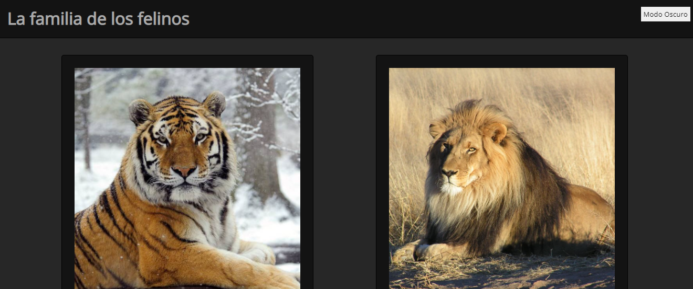
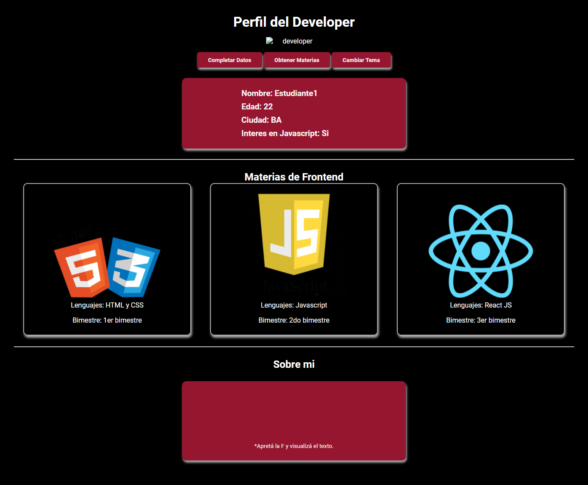

Sobre la materia
Front end abarca el conjunto de tecnologías que se emplean para desarrollar los componentes de un sitio Web que interactúan con el usuario, y es por ello que se suele decir que están del lado del cliente.
En esta segunda materia del track Front End, estaremos acercando a los estudiantes las herramientas y habilidades necesarias para sumar interactividad a la capa que previamente estructuraron gracias a HTML y CSS. Con ello, podrán capturar tanto datos como eventos para que los usuarios puedan interactuar con el sitio de manera dinámica
Proyectos de Frontend II
-
Piedra, papel y tijera
Uso de modales (alert, prompt y confirm)
ver proyecto -
Identificar los elementos del DOM

-
Implementar modo oscuro
Uso de selectores y clases en JS
 Modo Oscuro -
Parcial
Modificar el DOM desde JS
